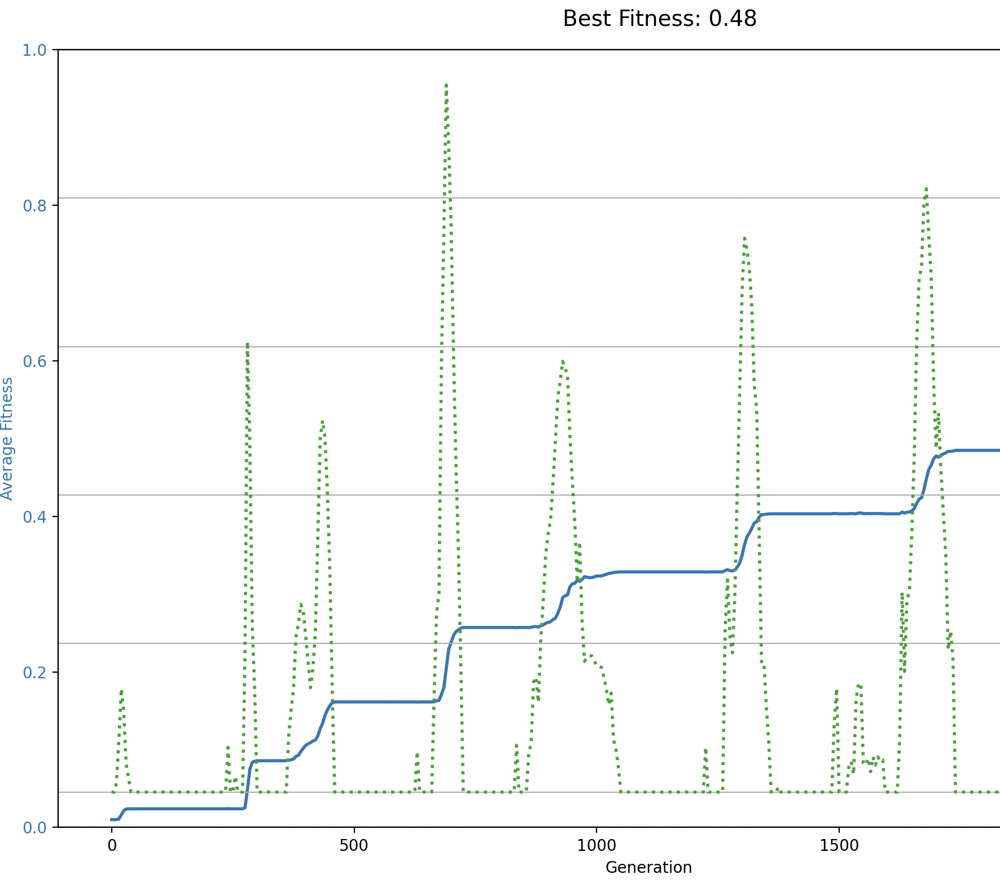
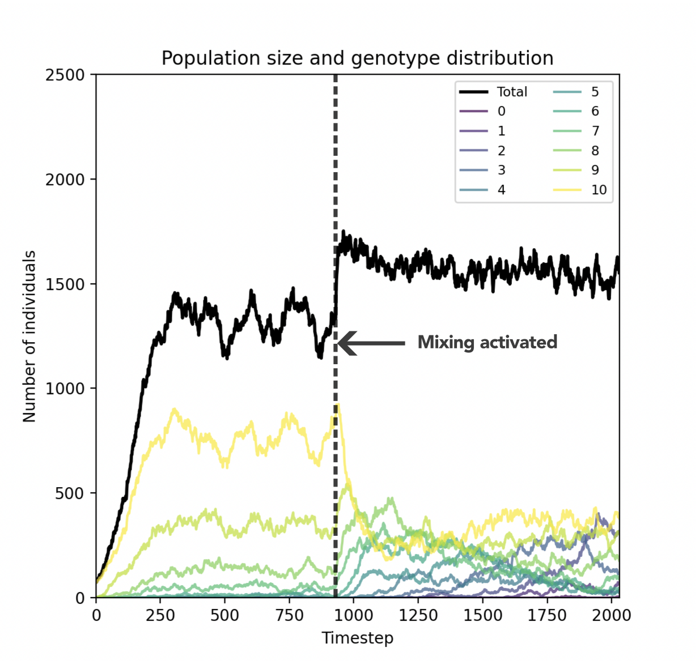

17 Answers exercises
17.1 Answers to Evolution Practical 1
Answer (Section 14.1)
For this, you can simply multiply the velocity components every timestep by a value > 1. For example:
# Accellerate the velocity vx *= 1.01 vy *= 1.01Note that this gets out of hand quite quickly.
To do this, we need to store the new values in a temporary variable, and then assign them to the original variables. This is necessary because while we first modify vx, we still want to use the ‘old’ value of vx to calculate the new vy. The following code rotates the velocity vector by 0.05 radians:
# Rotate the velocity vector by a small angle vxnew = vx * np.cos(0.05) - vy * np.sin(0.05) vynew = vx * np.sin(0.05) + vy * np.cos(0.05) vx, vy = vxnew, vynewIf you run this code, you will see that the dot will go in circles.
While the code above stores x, y, vx, and vy as a ‘global variables’, this is not good if we have many individuals. Instead, we can store the state of each individual in a list, dictionary, or a class. For example, we make a class ‘cell’ and store 100 of these ‘cells’ in a large list:
class Cell: def __init__(self, x, y, vx, vy): self.x = x self.y = y self.vx = vx self.vy = vy # Create 100 cells with random positions and 0 velocity cells = [Cell(np.random.rand(), np.random.rand(), 0.0, 0.0) for _ in range(100)]
Moving the target (Section 14.2)
A working code to steer the individuals towards the target is shown below. Note that the acceleration that is applied is only small, otherwise the individuals will move in a straight line towards the target very rapidly.
def move_towards_dot(self, cell):
"""Apply forces in the direction of the dot."""
# Calculate dx and dy
dx = self.target_position[0] - cell.x
dy = self.target_position[1] - cell.y
# Calculate the distance to the target (pythagorean theorem)
distance = np.sqrt(dx**2 + dy**2)
# Normalize dx and dy
dx /= distance
dy /= distance
# Apply a small force towards the target
cell.ax += dx * 0.01
cell.ay += dy * 0.01Reproduction (Section 14.3)
A working code to reproduce a cell is shown below. Note that I decided to first throw an individual away, and then add the newborn individual (instead of the other way around). This ensures the newborn cannot be immediately thrown away, which would be a rather pointless event.
def reproduce_cell(self, cell):
# Reproduce: Create a new cell with the same properties as the current cell
angle = np.random.uniform(0, 2 * np.pi)
radius = np.random.uniform(0.05, 1.5)
new_x = cell.x + radius * np.cos(angle)
new_y = cell.y + radius * np.sin(angle)
new_cell = Cell(new_x, new_y, cell.vx, cell.vy)
random_cell = np.random.choice(self.cells)
self.cells.remove(random_cell)
self.cells.append(new_cell)Collision (Section 14.4)
A working code for cell-cell collision is shown below. Note that we apply a large force as we want this force to be able to overpower other forces that make the cells overlap.
def avoid_collision(self, cell):
"""Avoidance forces to prevent cells from colliding."""
for other_cell in self.cells:
if other_cell is not cell:
# Calculate the distance between the two cells
dx = cell.x - other_cell.x
dy = cell.y - other_cell.y
distance = np.sqrt(dx**2 + dy**2)
# If the cells are too close, apply a repulsion force
if distance < 5.0 and distance > 0: # Threshold for "too close"
# repulsion force proportional to the inverse of the distance
force_magnitude = (5.0 - distance) / distance
cell.ax += force_magnitude * dx * 100
cell.ay += force_magnitude * dy * 100A resource peak (Section 14.5)
A working code to implement a resource peak (with optional noise set to 0 by default) is shown below:
def fill_grid(self, grid, mean_x, mean_y, std_dev, noise=0):
"""Creates a Gaussian distribution with noise on the grid."""
for i in range(WORLD_SIZE):
for j in range(WORLD_SIZE):
x = i / (WORLD_SIZE - 1)
y = j / (WORLD_SIZE - 1)
distance_squared = (x - mean_x)**2 + (y - mean_y)**2
grid[i, j] = np.exp(-distance_squared / (2 * std_dev**2)) * np.random.uniform(0.0, 1.0)**noise
# Normalize the grid to keep the total resource concentration the same
grid /= np.sum(grid)
self.grid = gridRun and tumble (Section 14.6)
A working code to implement a run-and-tumble mechanism shown below:
def find_peak(self, cell):
# Convert cell position to grid indices, as well as the previous position
grid_x = int(cell.x) % WORLD_SIZE
grid_y = int(cell.y) % WORLD_SIZE
next_x = (int(cell.x + 10*cell.vx) + WORLD_SIZE) % WORLD_SIZE
next_y = (int(cell.y + 10*cell.vy) + WORLD_SIZE) % WORLD_SIZE
# Get the resource value at cell's position, as well as the next position
resource_value = self.grid[grid_x, grid_y]
resource_next = self.grid[next_x, next_y]
# Check if the cell is moving in the right direction
if resource_next > resource_value:
# Moving in the right direction: small random adjustment
angle = np.random.uniform(-0.1, 0.1) # Small angle change
else:
# Moving in the wrong direction: large random adjustment
angle = np.random.uniform(-np.pi*1.0, np.pi*1.0) # Large angle change
# Rotate the velocity vector by the angle calculated
new_vx = cell.vx * np.cos(angle) - cell.vy * np.sin(angle)
new_vy = cell.vx * np.sin(angle) + cell.vy * np.cos(angle)
# Update the acceleration with the new velocity vector
cell.vx = new_vx
cell.vy = new_vy
cell.ax += cell.vx
cell.ay += cell.vyStickiness (Section 14.7)
A working code for stickiness is shown below. The force applied here is smaller than the collision force (as said, we want to try and avoid collision even as cells want to move closer to eachother).
def stick_to_close(self, cell):
"""Stick to closeby cells."""
for other_cell in self.cells:
if other_cell is not cell:
# Calculate the distance between the two cells
dx = cell.x - other_cell.x
dy = cell.y - other_cell.y
distance = np.sqrt(dx**2 + dy**2)
# If the cells are too close, apply a repulsion force
if distance < 12 and distance > 5: # Threshold for "close"
# Calculate the repulsion force proportional to the inverse of the distance
cell.ax -= cell.stickiness * dx *10
cell.ay -= cell.stickiness * dy *10The evolution of stickiness (Exercise 14.8)
- In the full model, stickiness naturally evolves to be higher. Natural selection therefore favours stickiness. However, it does not keep increasing and it stabilises around 0.25.
- The advantages of stickiness are that larger groups of cells are better at steering towards the resources. Even if a single cell tries to go in the wrong direction, it will be pulled back. Together, they are less sensitive to the noise. Another distinct advantage is that the stickiest cells are sorted to be in the center of the group (as you have already seen earlier in this course!). That means that even after the peak was found, the stickiest cells have an advantage over the other cells as they can occupy the peak of the resource distribution. The disadvantages of stickiness are that larger groups move more slowly, and that the sticky clusters tend to stay together even if there are many resource peaks (and therewith miss out on resources).
- The duration of the seasonal cycle is very important. If it is very long, it does not matter that the large clusters move slowly, as they will be better at finding and staying on the peak by being sticky. If the cycle is however very short, it may be more important to be able to move quickly and change direction rapidly. In that case, being too sticky may be a problem. As you modify this parameter in the online model, you will indeed see that shorter seasons mostly cause stickiness to drift close to 0.0, while longer seasons cause stickiness to evolve towards 0.25 or even higher.
17.2 Answers to Evolution Practical 2
Questions Exercise 15.1
- If we sample 10 unfit individuals, the weight of the
no_reproduction_eventis proportionally high (the black slice of the roulette wheel is big). Hence, there is only a small chance that anyone will reproduce. - If we sample 10 fit individuals (fitness 1), the chances are much higher that someone will reproduce.
- If the dummy value is 0, the chances that someone will reproduce are the same in both scenarios, as even with very unfit individuals there is no chance that nobody reproduces.
- In nature, if no individual is sufficiently fit, reproduction may not occur at all. For example, if the competing individuals are bacteria with very low glucose uptake rates, they may not yet be physiologically ready to reproduce. In such cases, population size should remain stable or even decline if death is also occurring. The no_reproduction_event captures this by ensuring that fitness is not judged solely in relative terms against other individuals, but also in absolute terms against environmental demands.
- If a grid point is empty (contains no individual), make a list of (up to) 8 individuals around that grid point. Apply the roulette wheel for those individuals, and place the ‘winner’ inside the empty grid point.
Questions Exercise 15.2
A snippet to calculate the standard deviation of a population is shown below. Note that this value is already being plotted, so if you modify this function you ought to be able to see what happens immediately.
def calculate_diversity(population):
"""Calculate diversity as the standard deviation of fitness values."""
mean = sum(population) / len(population)
variance = sum((x - mean) ** 2 for x in population) / (len(population) - 1)
return math.sqrt(variance)- The green dotted line is the standard deviation of the values in the population (‘diversity’). From this we can see that the population is only breifly diverse whenever a new, fit individual appears. In between these phases, diversity is 0. This makes intuitive (biological) sense, as with a low mutation rate the only moments where there is more than 1 species is during the invasion of a new mutant. During all other phases, there is just a single (fittest) species.

Questions Exercise 15.3
- The new blue dotted line represents how many mutations are beneficial (towards the target). As the population gets closer to the target, the number of beneficial mutations decreases. As such, this line is a mirror image of the fitness in the population. We will look a bit deeper into this line in the next model.
- Generally speaking, a higher mutation rate helps to find the target faster. However, with high mutation rates (0.01 or higher), the fitness after the target is found starts to decrease, as individual produce many (unfit) mutants. In fact, if mutation rate is too high (approximately 0.04 or higher), the population fails to find the target at all, as reproduction is too inaccurate! This concept is known as the ‘error threshold’ or the ‘error catastrophe’ in evolutionary biology.
- Qualitatively, there is no clear difference to what we saw before: diversity only peaks at moments when there is a new mutant coming in, but otherwise diversity is 0.
- There is no distinction between genotype and phenotype. Fitness is directly calculated from the DNA sequence, so there is no ‘genotype-to-phenotype mapping’.
Questions Exercise 15.4
- The new black line is the maximum fitness in the population. Thanks to this line we can see that, sometimes, an individual is present that is fitter but it does not manage to take over the population. We are dealing with a stochastic process, so this is very natural.
- The fitness line once again goes in distinct steps. The diversity line (green dotted) has a distinct behaviour compared to earlier models. Instead of only going up during the discovery of a new mutant, it constantly creeps up during periods where fitness does not change. This is because the codon-table is partially redundant: many different DNA sequences can code for the same amino acid sequence, so diveristy increases. However, when a new “fitter” individual comes in, diversity goes down as that individual clonally takes over the population. Then, diversity slowly increases again. A similar pattern is reflected in the line that represents the “beneficial mutations” (blue dotted line). TLDR; even when fitness is not changing there is still a lot going on in this population!
- This model represents a many-to-one mapping between genotype and phenotype. The DNA sequence (genotype) is translated into an amino acid sequence (phenotype), which is then used to calculate fitness. This means that many different genotypes can lead to the same phenotype, and thus the same fitness. Earlier in this course you have learned about development, and those processes often lead to effects where the same genotype can produce many different shapes (phenotypes).
- BONUS: I have not personally done this, and I do not know the answer to this question yet. However, it is sometimes observed that with many-to-one mapping, populations can because better and better at switching between two alternating targets. This is because the alternating selection pressures make populations move towards genotypes that are “close” to both targets, and because there is some neutrality coding this can be acchieved without losing fitness in either environment. For cool paper on this principle, see Crombach and Hogeweg (2008). I suspect however that our current model will not be able to do the same.
17.3 Answers to Evolution Practical 3
This practical is quite open-ended, so instead of answers it is more useful to have a scientific discussion. The image below was first run on a spatially structured grid, but from the dashed line onwards the grid was mixed every timestep. From this we can see that it matters “who you compete with”. On the spatial grid, individuals compete mostly with other individuals of their own species. That means that, on average, they cannot complement each other by providing public goods (they produce the same set!). Because of this, the “omni-producers” (yellow line) dominates, surrounded by a cloud of mutants that rely on other types. The population size fluctuates strongly, as local populations can collapse due to the loss of public goods, typically followed by the “omni-producers” once again invading the available niche space (empty space on the grid).
When mixing the grid every time step, who you interact with is randomised, and individuals can now rely on other genotypes in the population. Although there is some luck involved in this, you can see that the total population (the black line) increases from this point onward. Thus, although the omni-producers are less dominant, statistically individuals are much better off in this mixed world. That said, there is a risk to this mixed population: if the cost of producing public goods is too high, the population can collapse as there is a strong incentive to lose production of public goods and start relying on others. Depending on your implementation, you may find that mixed systems therefor perform better or worse than spatially structured systems. If they behave identically though, let me (Bram) know, as that is something I almost never observe in models like this ;)
